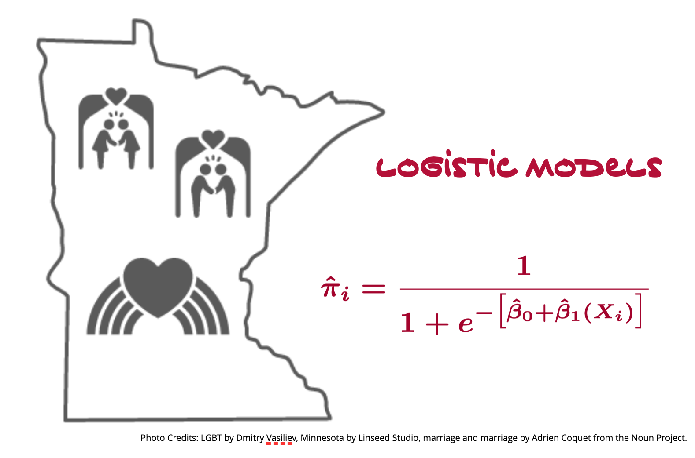

Assignment 05
LOGISTIC REGRESSION
This goal of this assignment is to give you experience working with working with logistic regression models to analyze dichotomous outcome data. In this assignment, you will use the data from the file same-sex-marriage.csv to examine the effects of two aspects of religion (denomination, and frequency of attendance of religious services) on the support of same-sex marriage.
Instructions
Submit either your QMD and HTML file or, if you are not using Quarto, a PDF file of your responses to the following questions. Please adhere to the following guidelines for further formatting your assignment:
- All graphics should be resized so that they do not take up more room than necessary and should have an appropriate caption.
- Any typed mathematics (equations, matrices, vectors, etc.) should be appropriately typeset within the document using Markdown’s equation typesetting.
- All syntax should be hidden (i.e., not displayed) unless specifically asked for.
- Any messages or warnings produced (e.g., from loading packages) should also be hidden.
This assignment is worth 15 points.
Effect of Religious Service Attendance
You will begin the analysis by examining the effect of religious service attendance on support of same-sex marriage. Because the data for this predictor come from a Likert scale (ordinal in nature), we need to examine whether we can treat it as a continuous predictor in the model, or whether we should treat it as categorical.
- Begin by computing the empirical proportion of people that support same-sex marriage for each of the attendance categories. Create a line plot that shows the relationship between proportion of support and attendance.
Based on the plot you just created, the relationship between proportion of support and attendance seems linear. Because of this, we can treat the Likert data as continuous; using a line (or polynomial) to fit the relationship. The only caution being that when interpreting a slope, we say something like, “a one-unit difference in \(X\) is associated with a \(\hat\beta_1\)-unit difference in \(Y\)”. For ordinal (Likert) data a one-unit difference in \(X\) really indicates a shift from one category to the next highest category.
- Fit two logistic models to the data using religious service attendance. In the first model, only include the linear effect of attendance. In the second model, include both a linear and quadratic effect to predict variation in support for same-sex marriage. Which model should be adopted (linear or quadratic)? Justify your response by providing any statistical evidence you used in reaching your decision. (Note: The model you adopt here will be henceforth referred to as Model 1.)
Write the fitted equation for Model 1. (Don’t forget to include all appropriate subscripts. Also define any terms in the model that are ambiguous.)
Use the fitted equation for Model 1 to predict the (a) log-odds, (b) odds, and (c) probability of someone supporting same-sex marriage if that person attends religious services almost every week.
Effect of Denomination
- Are there sample differences in the proportion of people who support same-sex marriage between the denominations? Explain by using evidence from the sample data.
Fit a logistic model to the data using denomination to predict variation in support for same-sex marriage (Model 2). In this model, use Protestant as the reference group.
- Interpret the effect associated with the
Jewishcoefficient in terms of (a) log-odds, and (b) odds.
Effect of Attendance and Denomination
Fit the logistic model that includes all the adopted effects for religous service attendance and the effects of denomination to predict variation in support of same-sex marriage. (Note: This model will be referred to as Model 3.)
- Compute and report one of the pseudo-\(R^2\) values for Model 3. Also provide an interpretation of this measure.
Adding Covariates
Now you will examine three potential covariates (friends, age, and female) that have been linked in the substantive literature to support of same-sex marriage.
- To help think about which covariates should be included in your model, create a correlation matrix of the outcome, and all three covariates. By referring to this matrix, clearly indicate the order in which you will add covariates into the model.
Fit three logistic models based on the order of importance of the three covariates that also include the effects of religious attendance, and denomination. For example, the first of these three models would include the effects of religious attendance, denomination, and the most important covariate you identifed in Question 8. The second model would include the effects of religious attendance, denomination, and the two most important covariates you identified. Finally, the third model would include the effects of religious attendance, denomination, and all three covariates.
Which of these three models should be adopted as you final model (or set of models)? Justify your response by providing any statistical evidence you used in reaching your decision. (2pts.)
Create a table of results from your set of fitted models. This table should include Models 1–3 and also any model(s) you adopted from the previous question. Like other regression tables you have created, be sure to include the estimated coefficients and standard errors for each of the effects included in the models. (To be consistent with ASA recommendations, do not include p-values or stars.) Also include the AICc values for each model. (2pts.)
Interpreting the Final Adopted Model
Create a plot that visually displays the results of your final adopted fitted model. Be sure to visually show the effects the focal predictors (religious service attendance and denomination). Also show any pertinent covariates you think are necessary to include. (Think about how the inclusion of the covariates help readers better understand the effects of the focal predictors.) (2pts.)
Write a few sentences that tell the data narrative about the effects of religious service attendance and denomination on the support of same-sex marriage. Use the models in your table of model results to help create this narrative. Keep the focus on the focal variables in this narrative.